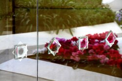

Temple Spotlight
Temple History
Announcement: 7 April 1984
Groundbreaking and Site Dedication: 27 February 1988 by Ezra Taft Benson
Public Open House: 20 February-3 April 1993
Dedication: 25-30 April 1993 by Gordon B. Hinckley
The San Diego Temple was the third temple built in California. The architects of the San Diego temple were William S. Lewis, Jr., Dennis Hyndman and Shelly Hyndman. Both of the Hyndman's were Roman Catholics and had never been or seen the interior of a temple.
On Monday December 23, 1991, the statue of the angel Moroni was installed atop of the eastern spire of the San Diego Temple. After putting the angel Moroni, a flock of seagulls circled the angel Moroni three times before going their course.
Important Information
Hours:
Monday: 6:00am-6:00pm
Tuesday-Saturday: 6:00am-8:00pm
Sunday: closed
• Clothing rental available
• Cafeteria available
• Distribution center nearby
Did You Know?
The San Diego Temple has the "Seal of Melchizedek" symbol all over the temple. It is found in over 10,000 locations in and around the temple. This symbol is most often represented by an 8 point star composed of two squares offset 45 degrees and overlaid.
Upcoming Events
• Sights & Sounds of Christmas: Dec 01, 2020-January 01, 2021
• Temple Closure: November 26, 2020-November 27, 2020
• Temple Closure: December 24, 2020-November 25, 2020